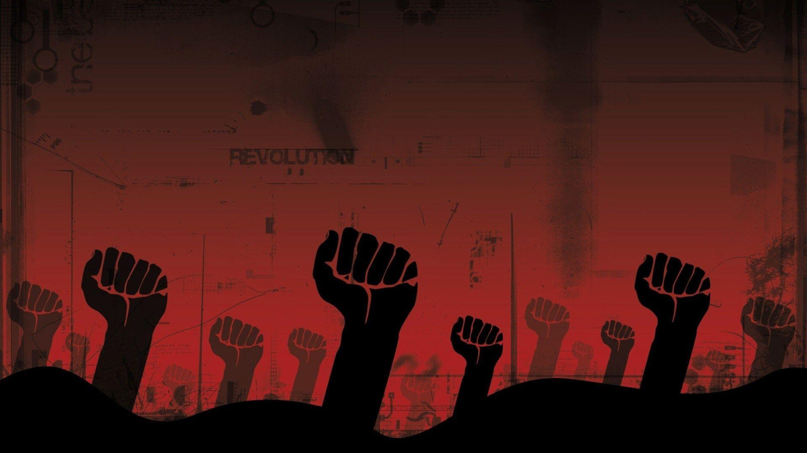

About Me
Hi. My name is Tony Su. Or whatever you prefer, really. This is a more formal introduction than that on my blog, because I do some more serious stuff here than there.
I'm a student, still in university. I'm slightly depressed, but I'm getting better. I'm from China, so I speak several languages, and I'm a Marxist. I try my best to make the world better, no matter how small of an impact I can make.
Honestly, there's not much to say. You'll understand my philosophy a bit more if you just read the stuff on this site (I mean, why else would you be here?). If you disagree, that's completely fine with me. Shoot me an email or something and we can discuss it.
Don't try to threaten me with force though. That has never worked, and it never will work.
早/中/晚安。我叫Tony Su，或者随你喜欢叫什么。
是个在读大学生，中国人，说中英法语。有点抑郁症。马克思/毛泽东主义者。我宣传搞的比较多（这个网站就是其中一种），实际行动也做过一些，但是要谈真正发起解放群众的运动还差很远。
其他的没什么好说的了。读几篇我这网站上面的文章应该就能看懂我的精神核心了。我算是个半乐观半悲观的人，有时候反复横跳，但是总体我对革命与生活是有信心的。如果你对我哪篇文章的内容有不同意的地方，或者想和我讨论，可以给我发邮件，或者干脆加我微信，随时欢迎。
The website is open sourced. Github here.
本网站完全开源。源码请参见Github.